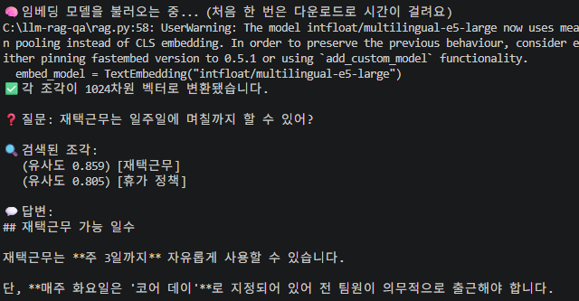
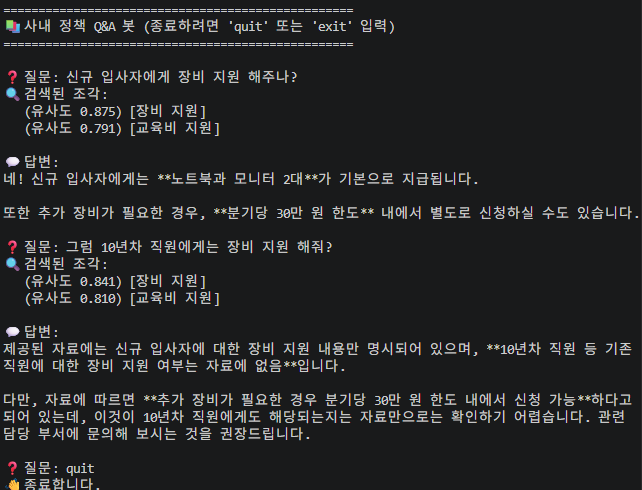
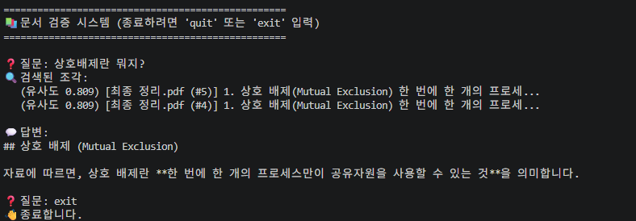

첫 RAG 전체 파이프 라인 동작
첫 RAG 전체 파이프 라인이 처음부터 끝까지 동작했다고 한다.

[이번 코드의 흐름]
문서를 조각으로 나누고 → 각 조각을 벡터로 임베딩하고 → 질문과 가장 비슷한 조각을 검색해서 → 그 조각만 Claude에게 근거로 주고 답변을 생성
하지만 문제는 문서와 질문을 강제적으로 코드에 넣어서 테스트했다는 부분이다.
내가 만들고 싶은건 실제 문서를 벡터화 해서 직접 입력한 질문에 대답하게 하는 부분이니 말이다.
터미널 입력을 만들자!
if __name__ == "__main__":
question = "재택근무는 일주일에 며칠까지 할 수 있어?"
print(f"❓ 질문: {question}\n")
# 검색은 한 번만 — 결과를 받아서 생성 단계로 넘긴다
retrieved = retrieve(question)
print("💬 답변:")
try:
print(answer(question, retrieved))
except Exception as e:
print(f"⚠️ 생성 단계 실패: {e}")
print(" (API 키나 크레딧을 확인해 주세요. 검색은 위에서 정상 동작했습니다.)")
현재는 ‘재택근무는 일주일에 며칠까지 할 수 있어?‘라는 질문이 정해져 있고 그에 대한 답변을 받았다.
이 부분을 input 처리하여 질문을 받을 수 있게 아래와 같이 수정하였다.
if __name__ == "__main__":
print("=" * 50)
print("📚 사내 정책 Q&A 봇 (종료하려면 'quit' 또는 'exit' 입력)")
print("=" * 50)
while True:
question = input("\n❓ 질문: ").strip()
# 종료 명령
if question.lower() in ("quit", "exit", "종료"):
print("👋 종료합니다.")
break
# 빈 입력은 건너뛰기
if not question:
continue
# 검색 → 생성
retrieved = retrieve(question)
print("💬 답변:")
try:
print(answer(question, retrieved))
except Exception as e:
print(f"⚠️ 생성 단계 실패: {e}")
print(" (API 키나 크레딧을 확인해 주세요. 검색은 위에서 정상 동작했습니다.)")
‘while True’ 루프로 감싼 이유는 모델 로딩이 오래 걸리다 보니 한번 실행해서 계속 질문할 수 있게 하기 위해서다.
[실행결과]

갑작스러운 프로젝트!
현재 개발하고 있는 부분을 아내와 공유하고 있었는데 아내가 구현하고 싶은 기능이 있다고 했다.
그 내용을 정리하면 아래와 같았다.
- 자신의 폴더에 있는 자료를 전부 등록하여 자료 내용을 조견표식으로 정리.
- 내가 작성중 자료와 기존 자료 내용간 중언이 있는지 체크하고 놓친 내용있는지 확인.
- 프로젝트를 옮길때마다 새로운 문서등록 필요 한마디로 재사용 가능해야함.
그래서 해당 내용으로 개발 진행하면서 배워보기를 원한다고 파트너에게 전달했고 학습 순서는 유지하되 최종목표는 위의 기능을 구현하는걸로 잡고 프로젝트를 시작했다.
파일 형식 읽어오기!
첫번째 한일은 어떤 문서를 읽어 들이는지 확인하는 부분이었다.
파이썬으로 문서를 읽을 때 형식마다 난이도가 꽤 다른데 ‘한글(.hwp)‘는 까다롭다고 한다.
확인한 결과 PPT, EXCEL, PDT가 주류라는 답변을 받아서 이 세형식을 가지고 진행하기로 했다.
[파트너가 알려준 세 형식(PPT, EXCEL, PDT)의 성격]
PDF는 보통 줄글(텍스트)이라 지금까지 다룬 방식과 잘 맞아요. 문단 단위로 조각내면 됩니다. 다만 스캔해서 이미지로 된 PDF는 글자를 못 읽으니, 그런 게 섞여 있으면 따로 처리가 필요해요.
PPT는 슬라이드마다 텍스트 상자가 흩어져 있는 구조예요. 슬라이드 한 장을 조각 하나로 보면 자연스럽습니다.
엑셀이 좀 특이해요. 줄글이 아니라 표(행과 열)라서, 그냥 텍스트로 뽑으면 의미가 깨지기 쉽습니다. 셀 내용이 짧은 키워드들이라 임베딩·유사도 검색과 잘 안 맞는 경우도 많고요. 그래서 엑셀은 “내용 검색” 대상으로 넣을지, 아니면 표는 표대로 따로 다룰지 판단이 필요해요.
이제 문서 형식이 정해졌으니 각 형식을 읽을 수 있는 라이브러리 설치를 했다.
pip install pypdf python-pptx openpyxl
pypdf는 PDF, python-pptx는 파워포인트, openpyxl은 엑셀을 읽는 도구이다.
그리고 기존에 학습하던 코드에 아래와 같은 코드를 추가 하였다.
[파일 읽기 함수 추가]
#python
from pathlib import Path
from pypdf import PdfReader
from pptx import Presentation
from openpyxl import load_workbook
def read_pdf(path):
"""PDF에서 페이지별 텍스트를 뽑는다."""
reader = PdfReader(path)
texts = []
for page in reader.pages:
t = (page.extract_text() or "").strip()
if t:
texts.append(t)
return texts
def read_pptx(path):
"""PPT에서 슬라이드별 텍스트를 뽑는다."""
prs = Presentation(path)
texts = []
for slide in prs.slides:
parts = []
for shape in slide.shapes:
if shape.has_text_frame:
parts.append(shape.text_frame.text)
t = "\n".join(parts).strip()
if t:
texts.append(t)
return texts
def read_xlsx(path):
"""엑셀에서 시트별로 행 텍스트를 뽑는다."""
wb = load_workbook(path, data_only=True)
texts = []
for ws in wb.worksheets:
rows = []
for row in ws.iter_rows(values_only=True):
cells = [str(c) for c in row if c is not None]
if cells:
rows.append(" | ".join(cells))
t = "\n".join(rows).strip()
if t:
texts.append(f"[{ws.title}]\n{t}")
return texts
[폴더 전체를 훑는 함수]
#python
def load_folder(folder):
"""폴더 안의 PDF·PPT·엑셀을 모두 읽어 (출처, 내용) 조각 목록으로 만든다."""
folder = Path(folder)
chunks = [] # 조각 텍스트
sources = [] # 각 조각의 출처(파일명)
for path in folder.rglob("*"):
suffix = path.suffix.lower()
try:
if suffix == ".pdf":
pieces = read_pdf(path)
elif suffix == ".pptx":
pieces = read_pptx(path)
elif suffix == ".xlsx":
pieces = read_xlsx(path)
else:
continue
except Exception as e:
print(f" ⚠️ 읽기 실패: {path.name} ({e})")
continue
for i, piece in enumerate(pieces):
chunks.append(piece)
sources.append(f"{path.name} (#{i+1})")
if pieces:
print(f" ✅ {path.name} → {len(pieces)}조각")
return chunks, sources
[하드코딩 되어 있던 문서 부분을 폴더에서 읽어오게 전환]
#python
# 읽어올 자료 폴더 — 다른 프로젝트로 옮길 땐 이 경로만 바꾸면 됨
DATA_FOLDER = r"C:\llm-rag-qa\data"
print(f"📂 '{DATA_FOLDER}' 폴더에서 자료를 읽는 중...")
chunks, sources = load_folder(DATA_FOLDER)
print(f"📄 총 {len(chunks)}개의 조각을 읽었습니다.\n")
잠깐든 의문! 다른 사람이 이걸 사용할때 라이브러리는 어떻게 하나?
사용자의 PC에서 돌아갈때 라이브러리 또한 새로 받아야하는지 의문이 생겨 파트너에게 질문을 하니 ‘각자 새로 설치해야 한다’ 라는 답변을 받았다.
그럼 지금까지 받은 라이브러리 설치 내역을 문서로 정리해야 하나 싶을때 다음과 같은 방법을 알려주었다.
requirements.txt 만들기!!!
해당 파일에 지금까지 받은 파일들을 정리한 후
pip install -r requirements.txt
위와 같이 실행하면 한번에 깔 수 있다고 하였다.(휴~ 정말 다행이군….)
여기서 한가지 더! GitHub에 올리면 안되는 파일은 어떻게 하지?
생각해보니 ‘.env’ 파일에는 내 AI KEY 값이 저장되어 있다.
만약 이걸 그냥 올려버리면 다른 사람들이 그 키를 사용한다는 건데 이럴 경우는 어떻게 해야 할까?
.gitignore
이 파일을 만들어서 등록해 놓으면 제외해서 올린다고 한다.
그리고 한가지 팁이 있다면 “’.env’ 파일을 만들어야 하는구나"를 알 수 있도록, 키 없이 형식만 보여주는 .env.example을 제공해주는게 좋다고 한다.
venv란 무엇인가?
venv는 “이 프로젝트 전용 라이브러리 보관함” 이라고 한다.
한 프로젝트만 한다면 문제 없지만 같은 PC에서 다양한 프로젝트를 하게 될 경우 충돌이 일어 날 수 있기 때문에 프로젝트만다 격리된 보관함을 만드는데 이게 venv 다.
다시 프로젝트로 돌아와서 문서를 넣고 돌려보자!
위에 지정한 data 폴더에 PPT, PDF, XLSX 파일을 넣고 테스트를 진행해 보았다.
일단 해당 문서들의 해당 하는 질문과 없는 질문들을 던져 보았다.
[테스트 결과]

그런데 파트너 쪽에서는 제대로 파일을 못 읽었을 수도 있기 때문에 다음과 같은 코드를 추가하여 확인 해보라고 하였다.
# 임시 확인용 — 읽은 내용 미리보기
for src, ch in zip(sources, chunks):
print(f"\n── {src} ──")
print(ch[:200])
그럼 슬라이드에서 뽑은 텍스트이 앞부분이 출력 된다.
중복 체크 기능을 넣자!
이제 문서를 읽는부분도 확인했으니 중복 체크 기능부터 만들고자 했다.
먼저 아래와 같이 문장을 체크하는 코드를 만들었다.
"""
check_duplicate.py — A 문서 내부의 '문장 단위' 중복을 찾아 엑셀로 정리한다.
슬라이드/페이지를 문장으로 쪼개 문장끼리 유사도를 비교한다.
rag.py의 embed_model, cosine_similarity를 재사용한다.
실행: python check_duplicate.py
"""
import os
os.environ["HF_HUB_DISABLE_SYMLINKS"] = "1"
import re
from pathlib import Path
from openpyxl import Workbook
from openpyxl.styles import Font, PatternFill, Alignment
# rag.py에서 만든 도구 재사용 (모델은 한 번만 로딩됨)
from rag import embed_model, cosine_similarity, read_pptx, read_pdf, read_xlsx
# ──────────────────────────────────────────────────────────────
# 설정 — 여기만 바꾸면 됨
# ──────────────────────────────────────────────────────────────
TARGET_FILE = r"C:\llm-rag-qa\작성중\A.pptx" # 검사할 작성 중인 문서
THRESHOLD = 0.85 # 이 값 이상이면 '비슷한 문장'으로 본다
MIN_CHARS = 10 # 이 글자 수 미만의 짧은 문장은 비교에서 제외
OUTPUT_XLSX = r"C:\llm-rag-qa\중복체크결과.xlsx"
def split_sentences(text):
"""텍스트를 문장/줄 단위로 쪼갠다. 마침표·물음표·느낌표·줄바꿈 기준."""
# 줄바꿈을 먼저 문장 경계로 바꾸고, 문장부호 뒤에서 끊는다
parts = re.split(r"[\n]+|(?<=[.!?。])\s+", text)
out = []
for p in parts:
p = p.strip()
if len(p) >= MIN_CHARS: # 너무 짧은 건 버림
out.append(p)
return out
def load_sentences(target):
"""대상 파일을 읽어 (문장, 출처위치) 목록으로 만든다."""
suffix = target.suffix.lower()
if suffix == ".pptx":
blocks = read_pptx(target)
label = "슬라이드"
elif suffix == ".pdf":
blocks = read_pdf(target)
label = "페이지"
elif suffix == ".xlsx":
blocks = read_xlsx(target)
label = "시트"
else:
raise ValueError(f"지원하지 않는 형식: {suffix}")
sentences = []
locations = []
for block_idx, block in enumerate(blocks, start=1):
for sent in split_sentences(block):
sentences.append(sent)
locations.append(f"{label} {block_idx}")
return sentences, locations
def find_duplicates(sentences, threshold):
"""모든 문장 쌍을 비교해 유사도가 기준 이상인 쌍을 찾는다."""
print(f"🧠 문장 {len(sentences)}개를 벡터로 변환하는 중...")
vectors = list(embed_model.embed([f"passage: {s}" for s in sentences]))
print("🔍 문장끼리 유사도를 비교하는 중...")
pairs = []
n = len(sentences)
for i in range(n):
for j in range(i + 1, n):
score = cosine_similarity(vectors[i], vectors[j])
if score >= threshold:
pairs.append((score, i, j))
pairs.sort(reverse=True)
return pairs
def save_to_excel(pairs, sentences, locations, path):
"""찾은 중복 문장 쌍을 엑셀로 저장한다."""
wb = Workbook()
ws = wb.active
ws.title = "문장 중복 체크"
headers = ["유사도", "위치 A", "문장 A", "위치 B", "문장 B"]
ws.append(headers)
for cell in ws[1]:
cell.font = Font(bold=True, color="FFFFFF", name="맑은 고딕")
cell.fill = PatternFill("solid", start_color="4472C4")
cell.alignment = Alignment(horizontal="center", vertical="center")
for score, i, j in pairs:
ws.append([
round(float(score), 3),
locations[i],
sentences[i][:300],
locations[j],
sentences[j][:300],
])
widths = [10, 14, 55, 14, 55]
for col, w in enumerate(widths, start=1):
ws.column_dimensions[ws.cell(row=1, column=col).column_letter].width = w
for row in ws.iter_rows(min_row=2):
for cell in row:
cell.alignment = Alignment(vertical="top", wrap_text=True)
wb.save(path)
if __name__ == "__main__":
target = Path(TARGET_FILE)
print(f"📂 검사 대상: {target.name}\n")
sentences, locations = load_sentences(target)
print(f"📄 문장 {len(sentences)}개를 추출했습니다.\n")
if len(sentences) < 2:
print("⚠️ 문장이 2개 미만이라 비교할 게 없습니다.")
else:
pairs = find_duplicates(sentences, THRESHOLD)
print(f"\n✅ 유사도 {THRESHOLD} 이상인 문장 쌍을 {len(pairs)}개 찾았습니다.")
if pairs:
save_to_excel(pairs, sentences, locations, OUTPUT_XLSX)
print(f"💾 결과를 저장했습니다: {OUTPUT_XLSX}")
else:
print(" (중복으로 볼 만한 문장이 없습니다. 깔끔하네요!)")
-
embed_model.embed() 문장을 ‘숫자 묶음(벡터)‘로 만들어주는 일은 한다. 벡터로 만든 이후에는 ‘코사인 유사도’로 두 벡터가 얼마나 같은 방향인지를 잰다. 1에 가까 울 수록 의미가 비슷하다는 말이다. 여기서 중요한건 똑같은게 아니라 비슷한가를 본다는 점이다.
-
passage 찾아지는 대상에는 passage, 찾는 질문에는 query를 붙이는건 e5모델의 약속이라고 한다. 접두어를 맞춰주면 유사도가 더 정확진다.
-
THRESHOLD = 0.85는 사람이 정하는 기준선이다. 임계점에는 정답이 없고 결과를 보고 맞춰가는 값이라고 한다. 너무 높이면 적게 잡고, 낮추면 너무 만힝 잡아서 실행해보고 결과를 보면서 맞춰나가야 하는값으로 보인다.
-
코드 구조 해당 코드는 ‘문장 쪼개기(split_sentences) → 파일 읽어 문장 만들기(load_sentences) → 비교하기(find_duplicates) → 저장하기(save_to_excel)‘로 나뉘어져 있다.
문제 발생! 너무 많은 중복 문구 발생!
디렉토리에 파일을 넣고 돌려보았을 때 문제없이 돌아가는걸 확인했다.
문제는 결과물이었다.
문장을 비교해서 중복 문구를 찾다보니 각 페이지에서 쓰는 소제목이나 정형문구들 마저 다 나오는 바람에 13페이지의 PPT에서 8천개 이상의 중복 문구를 찾아버렸다.
이 부분을 줄여 보려고 고민해본 결과 생각한 방법은 2가지 였다.
- THRESHOLD를 높여보자.
- 정형문구들은 많으니깐 특정 개수 이상일 경우는 제외 해보자.
이 방법으로 파트너에게 물어보자 다음과 같은 코드가 생성 되었다.
[필터 추가]
from collections import Counter
# 같은 문장이 몇 번 나오는지 세서, 너무 자주 나오는 건 정형구로 보고 제외
counts = Counter(sentences)
REPEAT_LIMIT = 3 # 3번 이상 똑같이 나오면 정형구로 간주
filtered = [(s, loc) for s, loc in zip(sentences, locations)
if counts[s] < REPEAT_LIMIT]
sentences = [s for s, loc in filtered]
locations = [loc for s, loc in filtered]
print(f" (정형구 제외 후 문장 {len(sentences)}개)")
[완전히 똑같은 문구는 ‘정형구’로 간주]
if threshold <= score < 0.97: # 너무 똑같은 건 정형구로 보고 제외
pairs.append((score, i, j))
[소제목 같은 짧은 문구 걸러내기]
MIN_CHARS = 25 # 25자 미만 문장은 비교에서 제외 (소제목 거르기)
위 기능들을 전부 넣고 돌려보자 100개 내외로 줄었다.
하지만 줄어든 내용 중에서도 이걸 동일하게 볼 수 있나? 라는 의문이 드는 데이터들이 많이 보였다.
이부분에 대해서 더 연구해 봐야겠다.
*항해 두번째날 바람은 지나가고 아직은 순항중……. *